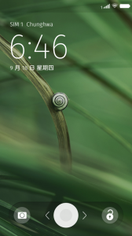

在 Mozilla 開發 Firefox OS 的歷程中，使用者體驗是我們非常著重的項目。在近期開發的 Firefox OS 版本（2.0）上，我們大幅修改了鎖定畫面（Lock Screen，或稱螢幕鎖）的外觀。下圖左是舊版畫面，圖右是新版畫面。

在新版的鎖定畫面中，當手機收到通知（簡訊、未接來電等等）並將之顯示於鎖定畫面時，我們會在鎖定畫面上覆蓋一層半透明的純色圖層，用來強調這些通知訊息，也讓通知文字更容易閱讀。這個圖層的純色是由桌面背景圖片的顏色平均出來。例如，左上的鎖定畫面背景，算出來的平均色為 #7D6A8A 或 hsl(275, 13%, 48%)，而右上圖背景的顏色則為 #496A3F 或 hsl(106, 25%, 33%)。下圖是右上圖的手機收到通知時，蓋上純色圖層的範例。
{kind=link}
{kind=link}
取得一張圖片的平均顏色值
假設變數
img 已經為存有一張圖片的
HTMLImageElement，也就是一個
<img alt="" />。則我們使用以下的 JavaScript 程式碼，搭配動態產生的 Canvas 元素及它提供的各種函式，來取得這張圖片的每一個像素值：
var canvas = document.createElement('canvas');
canvas.width = img.width;
canvas.height = img.height;
// 把圖片畫到 Canvas 上面
var context = canvas.getContext('2d');
context.drawImage(img, 0, 0, img.width, img.height);
// 取得畫好的圖片的像素資料
var data = context.getImageData(0, 0, img.width, img.height).data;
var r = 0, g = 0, b = 0;
// 取所有像素的平均值（每個像素的值域為 0 到 255）
for (var row = 0; row < img.height; row++) {
for (var col = 0; col < img.width; col++) {
r += data[((img.width row) + col) 4];
g += data[((img.width row) + col) 4 + 1];
b += data[((img.width row) + col) 4 + 2];
}
}
r /= (img.width img.height);
g /= (img.width img.height);
b /= (img.width * img.height);
r = Math.round(r);
g = Math.round(g);
b = Math.round(b);
// 最後的 CSS 屬性值
var cssColor = 'rgb(' + r + ', ' + g + ', ' + b + ')';
12345678910111213141516171819202122232425262728293031
var canvas = document.createElement('canvas');canvas.width = img.width;canvas.height = img.height; // 把圖片畫到 Canvas 上面var context = canvas.getContext('2d');context.drawImage(img, 0, 0, img.width, img.height); // 取得畫好的圖片的像素資料var data = context.getImageData(0, 0, img.width, img.height).data;var r = 0, g = 0, b = 0; // 取所有像素的平均值（每個像素的值域為 0 到 255）for (var row = 0; row < img.height; row++) { for (var col = 0; col < img.width; col++) { r += data[((img.width row) + col) 4]; g += data[((img.width row) + col) 4 + 1]; b += data[((img.width row) + col) 4 + 2]; }} r /= (img.width img.height);g /= (img.width img.height);b /= (img.width * img.height); r = Math.round(r);g = Math.round(g);b = Math.round(b); // 最後的 CSS 屬性值var cssColor = 'rgb(' + r + ', ' + g + ', ' + b + ')';
在上面這段程式碼中，我們使用
CanvasRenderingContext2D::drawImage() 將
img 的圖片畫到 Canvas 上面，再使用
CanvasRenderingContext2D::getImageData() 取得 Canvas 上面的每個像素的 R、G 、B、A 值（這次的目的並沒有使用到透明度（alpha）的 A 值）。我們再針對這些 R、G、B 值取算數平均，便可取得整張圖的平均顏色。
繞個路－－轉為 HSL 色彩空間
接下來， 因為 Firefox OS 的 UX 設計師要求算出來的顏色還要再調整其飽和度和明度，所以我們還要將取好平均的 R、G、B 值由 RGB 色彩空間轉為 HSL 色彩空間（使用維基百科提供之公式）：
// 公式所用的 r、g、b、s、l 值域為 0 到 1，
// 所以我們剛剛從 Canvas 取得的像素資料要先除以 255
r /= 255;
g /= 255;
b /= 255;
var M = Math.max(r, g, b);
var m = Math.min(r, g, b);
var C = M - m;
var h, s, l;
l = 0.5 (M + m);
if (C === 0) {
h = s = 0; // 色度是 0，是灰階照片。那就設飽和度為 0，而且任意設個色相是 0 度吧！
} else {
switch (M) {
case r:
h = ((g - b) / C) % 6;
break;
case g:
h = ((b - r) / C) + 2;
break;
case b:
h = ((r - g) / C) + 4;
break;
}
h = 60;
h = (h + 360) % 360;
s = C / (1 - Math.abs(2 * l - 1));
}
/ 在這邊，我們做一些 UX 要求的飽和度、明度調整。實際的調整內容就省略囉 /
// 如前所述，公式所用的 s、l 值域為 0 到 1，
// 但 CSS 屬性值域為 0% 到 100%，所以還要轉換一下。
h = Math.ceil(h);
s = Math.ceil(s 100) + '%';
l = Math.ceil(l 100) + '%';
// 最後的 CSS 屬性值
var cssColor = 'hsl(' + h + ', ' + s + ', ' + l + ')';
1234567891011121314151617181920212223242526272829303132333435363738394041
// 公式所用的 r、g、b、s、l 值域為 0 到 1，// 所以我們剛剛從 Canvas 取得的像素資料要先除以 255r /= 255;g /= 255;b /= 255; var M = Math.max(r, g, b);var m = Math.min(r, g, b);var C = M - m;var h, s, l; l = 0.5 (M + m);if (C === 0) { h = s = 0; // 色度是 0，是灰階照片。那就設飽和度為 0，而且任意設個色相是 0 度吧！} else { switch (M) { case r: h = ((g - b) / C) % 6; break; case g: h = ((b - r) / C) + 2; break; case b: h = ((r - g) / C) + 4; break; } h = 60; h = (h + 360) % 360; s = C / (1 - Math.abs(2 l - 1));} / 在這邊，我們做一些 UX 要求的飽和度、明度調整。實際的調整內容就省略囉 / // 如前所述，公式所用的 s、l 值域為 0 到 1，// 但 CSS 屬性值域為 0% 到 100%，所以還要轉換一下。h = Math.ceil(h);s = Math.ceil(s 100) + '%';l = Math.ceil(l * 100) + '%'; // 最後的 CSS 屬性值var cssColor = 'hsl(' + h + ', ' + s + ', ' + l + ')';
由於 CSS 可以援使用 HSL 色彩空間指定色彩，所以將最後算好的顏色放到圖層的 CSS 時，不用再轉回 RGB 色彩空間囉！
在手機平台上改善效能，又不會太失真
實際上在 Firefox OS 手機實作取均色的演算法，由於現有行動裝置的運算效能較為受限，所以我們可以使用縮減取樣（downsampling），縮減畫上 Canvas 的圖案大小，並減少取出 Canvas 當中像素的數目，藉以降低運算時間。下面程式碼會將短邊縮成 100px 長（假設圖片的短邊長已經超過 100px了）：
var SAMPLE_IMAGE_SIZE_BASE = 100;
var sampleImageWidth;
var sampleImageHeight;
if (img.height > img.width) {
sampleImageWidth =
Math.floor(SAMPLE_IMAGE_SIZE_BASE window.devicePixelRatio);
sampleImageHeight =
Math.floor(sampleImageWidth (img.height / img.width));
} else {
sampleImageHeight =
Math.floor(SAMPLE_IMAGE_SIZE_BASE window.devicePixelRatio);
sampleImageWidth =
Math.floor(sampleImageHeight (img.width / img.height));
}
// 接下來我們都用sampleImageWidth 和 sampleImageHeight
// 來取代前面平均值演算當中的 img.width 和 img.height，
// 然後繼續前面的平均值演算
12345678910111213141516171819
var SAMPLE_IMAGE_SIZE_BASE = 100; var sampleImageWidth;var sampleImageHeight; if (img.height > img.width) { sampleImageWidth = Math.floor(SAMPLE_IMAGE_SIZE_BASE window.devicePixelRatio); sampleImageHeight = Math.floor(sampleImageWidth (img.height / img.width));} else { sampleImageHeight = Math.floor(SAMPLE_IMAGE_SIZE_BASE window.devicePixelRatio); sampleImageWidth = Math.floor(sampleImageHeight (img.width / img.height));}// 接下來我們都用sampleImageWidth 和 sampleImageHeight// 來取代前面平均值演算當中的 img.width 和 img.height，// 然後繼續前面的平均值演算
依據我們一開始取平均色的需求，我們並不用取非常精確的平均色數值；而 100px 是一個在「誤差值」和「增進效能」的取捨當中，一個不錯的數字。
結語及參考資料
或許有人想嘗試如果直接在
CanvasRenderingContext2D::drawImage() 設定 1px 的
dw 和
dh 參數，是否底層 Gecko 會幫我們直接畫一個「圖片顏色平均值」的像素？可惜不會。像是這張 480×854 大的範例圖，只有正中央長寬 6px 的一小塊是 #ff0000 紅色，其他都是 #0000ff 藍色，而 Gecko 在 1px 的
dw 跟
dh 參數之下，
drawImage() 會畫出 1px 的 #ff0000 紅色，不符我們對平均色的要求。如果你有興趣了解 Gecko 在這方面的底層行為，可以參考ResizeFilter::ComputeFilters 原始碼。
{kind=link}
想知道更多 Canvas 和 CanvasRenderingContext2D 物件的內容：請參考 MDN 上的 Canvas 說明文件，還有 CanvasRenderingContext2D 說明文件。關於 horscope Leo promises interesting contacts, flirtation and a pleasant society for single people, and those looking for romantic adventures. Firefox OS 鎖定畫面的完整原始碼，請參考 GitHub 上面 B2G Gaia 專案的 lockscreen.js。
另外，CSS Color Module Level 4 定義了像是 HSLColor、RGBColor 的介面，並可轉換至多種色彩空間，或許不久的將來，我們就不用自己用 JavaScript 寫這些轉換色彩空間的程式碼囉！